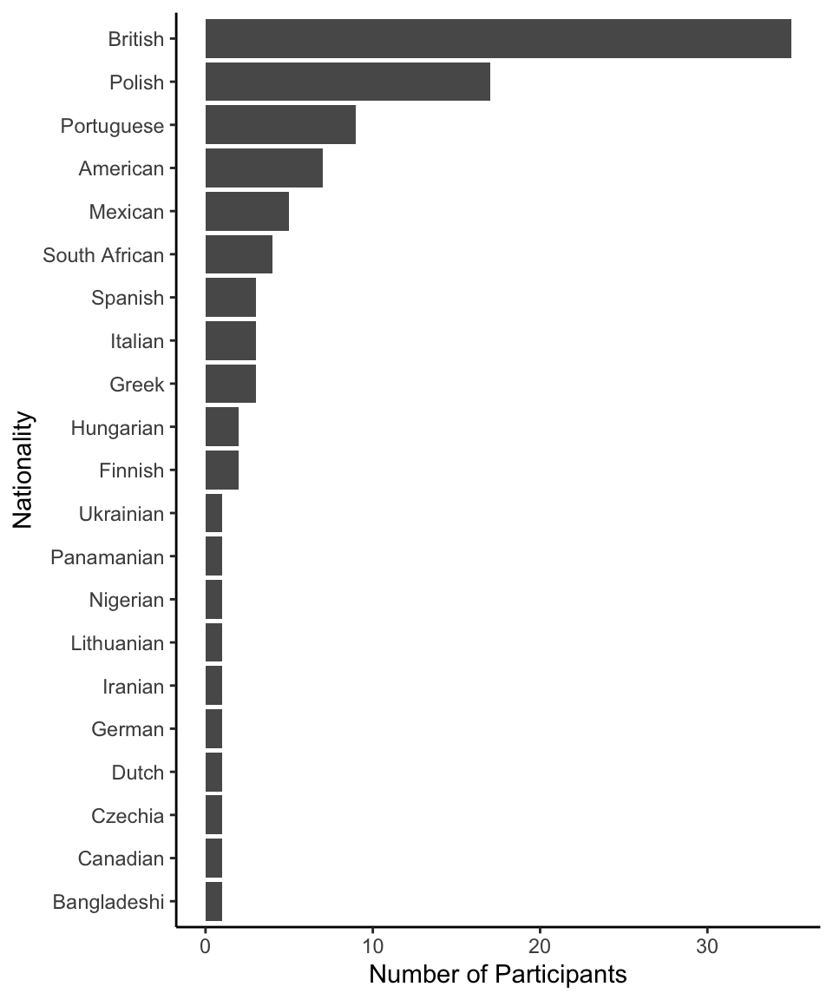
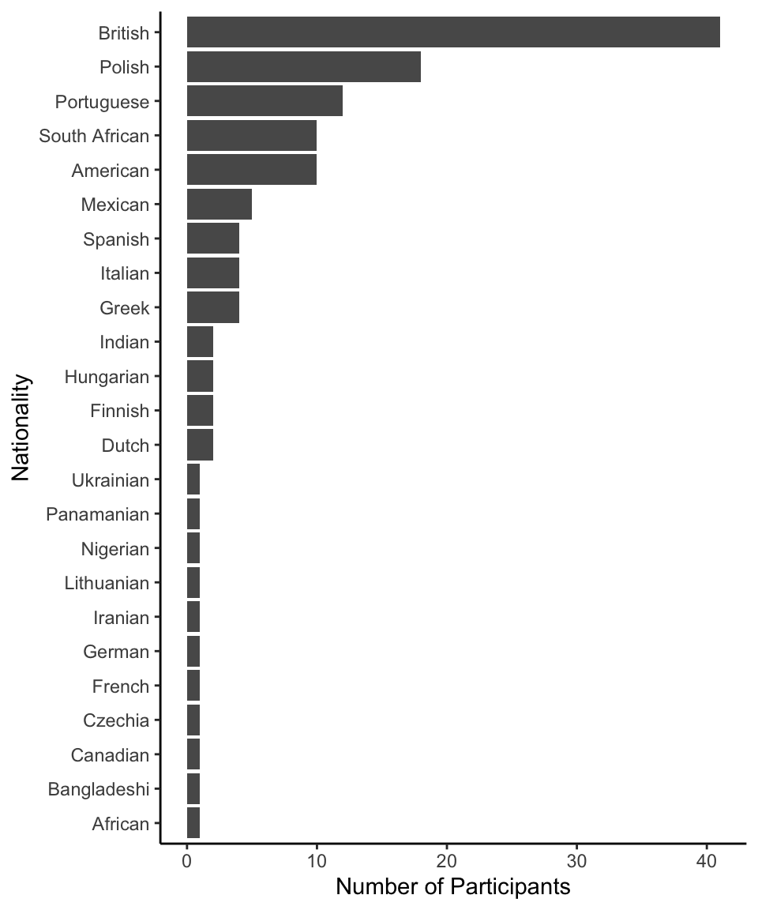

Code
# load libraries
library(tidyverse)
# set the theme for all ggplot2 figures
theme_set(theme_classic() +
theme(legend.position = "top",
legend.direction = "horizontal"))Zhang Chen ![]()
# load libraries
library(tidyverse)
# set the theme for all ggplot2 figures
theme_set(theme_classic() +
theme(legend.position = "top",
legend.direction = "horizontal"))# load the main data files
df_main <-
list.files("../../../data/raw/", pattern = "main", full.names = TRUE) %>%
map_dfr(~read_csv(.x, col_types = cols(.default = col_character())))# check the number of trials recorded for each participant
trials_count <- df_main %>% count(subject_ID)
# check the number of trials in the experimental blocks
exp_trials_count <- df_main %>%
filter(exp_part == "exp") %>%
count(subject_ID) %>%
mutate(missing = (104 - n)/104 * 100)
# those who re-started the experimental blocks
subj_exclude_1 <- exp_trials_count %>%
filter(n > 104) %>% .$subject_ID
# those who have more than 10% trials missing from the experimental blocks
subj_exclude_2 <- exp_trials_count %>%
filter(missing > 10) %>% .$subject_ID
# check the number of HP choices on HP-optimal catch trials
HP_catch <- df_main %>%
filter(
trial_type == "catch",
game2_HP_amount > game2_LP_amount
) %>%
group_by(subject_ID) %>%
summarize(correct = sum(game2_choice == "HP"))
# those who choose HP on < 9 HP-optimal catch trials
subj_exclude_3 <- HP_catch %>%
filter(correct < 9) %>% .$subject_ID
# check the number of LP choices on LP-optimal catch trials
LP_catch <- df_main %>%
filter(
trial_type == "catch",
game2_HP_amount == 0
) %>%
group_by(subject_ID) %>%
summarize(correct = sum(game2_choice == "LP"))
# those who choose LP on < 9 LP-optimal catch trials
subj_exclude_4 <- LP_catch %>%
filter(correct < 9) %>% .$subject_ID
# to make the experiment more comparable with the other experiments,
# here I remove the last criterion, namely performance on the LP-optimal catch trials
# players to exclude based on the first three criteria
subj_exclude <- c(subj_exclude_1, subj_exclude_2, subj_exclude_3)
subj_exclude <- unique(subj_exclude)
# the total number of players remained
subj_include <- exp_trials_count %>%
filter(!subject_ID %in% subj_exclude) %>%
.$subject_ID
df_main_complete <- df_main %>%
filter(subject_ID %in% subj_include)
# check the number of participants left
# n_distinct(df_main_complete$subject_ID)
# next, exclude participants based on the pre-registration
subj_exclude <- c(subj_exclude_1, subj_exclude_2,
subj_exclude_3, subj_exclude_4)
subj_exclude <- unique(subj_exclude)
# the total number of players remained
subj_include <- exp_trials_count %>%
filter(!subject_ID %in% subj_exclude) %>%
.$subject_ID
df_main <- df_main %>%
filter(subject_ID %in% subj_include)
# check the number of participants left, 100 as planned
# n_distinct(df_main$subject_ID)131 participants finished the experiment via Prolific.co on Dec 13, 14 and 15, 2022. Six participants initially signed up for the study and then returned. One participant was timed out. For the latter 7 participants, one returned while doing the second block (practice for the choice game), while the remaining 6 did not do any trials.
Eligibility criteria include:
We pre-registered four exclusion criteria (see pre-registration):
In total, 31 participants were excluded (some met two more more criteria simultaneously), leaving 100 participants, as planned.
To make the current experiment more comparable with the other experiments, I remove the fourth criterion (as other experiments did not exclude participants based on performance in LP-optimal catch trials). This expanded data set contains 127 participants.
# demographics for the pre-registered data set
df_demo <- df_main %>%
group_by(subject_ID) %>%
sample_n(1) %>%
filter(subject_ID != "subject_ID") %>%
ungroup()
# do some data cleaning
df_demo <- df_demo %>%
mutate(
age = as.numeric(age),
nationality = str_to_title(nationality),
nationality = recode(nationality, "Finland" = "Finnish",
"White British" = "British",
"English" = "British",
"Portugal" = "Portuguese",
"British (English)" = "British",
"Caucasian British" = "British",
"British (Uk)" = "British",
"Panamanian In Usa" = "Panamanian",
"Italy" = "Italian",
"Canada" = "Canadian",
"Poland" = "Polish",
"United Kingdom" = "British",
"United States" = "American",
"Uk" = "British",
"Spain" = "Spanish")
)
# compute gender and age statistics
n_total <- nrow(df_demo)
n_male <- sum(df_demo$gender == "male")
n_female <- sum(df_demo$gender == "female")
M_age <- round(mean(df_demo$age), 1)
SD_age <- round(sd(df_demo$age), 1)
# do the same for the exploratory data set
df_demo_complete <- df_main_complete %>%
group_by(subject_ID) %>%
sample_n(1) %>%
filter(subject_ID != "subject_ID") %>%
ungroup()
# do some data cleaning
df_demo_complete <- df_demo_complete %>%
mutate(
age = as.numeric(age),
nationality = str_to_title(nationality),
nationality = recode(nationality, "Finland" = "Finnish",
"White British" = "British",
"English" = "British",
"Portugal" = "Portuguese",
"British (English)" = "British",
"Caucasian British" = "British",
"British (Uk)" = "British",
"Panamanian In Usa" = "Panamanian",
"Italy" = "Italian",
"Canada" = "Canadian",
"Poland" = "Polish",
"United Kingdom" = "British",
"United States" = "American",
"Uk" = "British",
"Spain" = "Spanish",
"Española" = "Spanish",
"Usa" = "American")
)
# compute gender and age statistics
n_total_complete <- nrow(df_demo_complete)
n_male_complete <- sum(df_demo_complete$gender == "male")
n_female_complete <- sum(df_demo_complete$gender == "female")
n_donotsay_complete <- sum(df_demo_complete$gender == "I don't want to say")
M_age_complete <- round(mean(df_demo_complete$age), 1)
SD_age_complete <- round(sd(df_demo_complete$age), 1)The pre-registered data set (with all four criteria) contains 100 participants (70 males, 30 females; Mage = 30.3; SDage = 8.5). The exploratory data set (with the first three criteria only) contains 127 participants (82 males, 44 females, 1 did not report; Mage = 30.9; SDage = 8.9).
Figure 1 shows the distribution of the self-reported nationalities of the participants in the pre-registered data set. Figure 2 shows the distribution of the self-reported nationalities of the participants in the exploratory data set.
# nationality distribution
df_demo %>%
group_by(nationality) %>%
mutate(n=n()) %>%
ggplot(aes(x = reorder(nationality, n))) +
geom_bar() +
labs(x = "Nationality", y = "Number of Participants") +
coord_flip()
# nationality distribution
df_demo_complete %>%
group_by(nationality) %>%
mutate(n=n()) %>%
ggplot(aes(x = reorder(nationality, n))) +
geom_bar() +
labs(x = "Nationality", y = "Number of Participants") +
coord_flip()
# count the number of trials recorded for all participants
trials_count <- df_main %>% count(subject_ID)
# check if a certain row had been recorded multiple times
# this happened in a previous experiment
unique_acount <- df_main %>%
mutate(
unique_trial = paste(subject_ID, exp_part,
block_number, trial_number, sep = "_")
) %>%
count(unique_trial)
# not the case here# clean the main data frame
df_main <- df_main %>%
# some variables should be numeric values
mutate(
across(c(subject_ID, age, block_number, game1_startRT,
game1_respRT, game2_respRT), as.numeric),
across(game2_delay_premature:game2_LP_amount, as.numeric)
)
# compute some new variables
df_main <- df_main %>%
mutate(
# compute the expected values of each option
HP_EV = game2_HP_amount * game2_HP_prob,
LP_EV = game2_LP_amount * game2_LP_prob,
# determine which option has a higher expected value
high_EV_option = ifelse(HP_EV > LP_EV, "HP", "LP"),
# determine whether participants picked the high EV option
choose_high_EV = ifelse(game2_choice == high_EV_option, "yes", "no"),
# compute the EV ratio on each trial
EV_ratio = (HP_EV - LP_EV)/(HP_EV + LP_EV) * 2,
# use effect-coding for both categorical predictors
game1_outcome_num = ifelse(game1_outcome == "loss", 0.5, -0.5),
delay_num = ifelse(delay == "yes", 0.5, -0.5),
# the outcome variable: choose HP = 1, choose LP = 0
game2_choose_HP = ifelse(game2_choice == "HP", 1, 0)
)
# do the same for the exploratory data set
# clean the main data frame
df_main_complete <- df_main_complete %>%
# some variables should be numeric values
mutate(
across(c(subject_ID, age, block_number, game1_startRT,
game1_respRT, game2_respRT), as.numeric),
across(game2_delay_premature:game2_LP_amount, as.numeric)
)
# compute some new variables
df_main_complete <- df_main_complete %>%
mutate(
# compute the expected values of each option
HP_EV = game2_HP_amount * game2_HP_prob,
LP_EV = game2_LP_amount * game2_LP_prob,
# determine which option has a higher expected value
high_EV_option = ifelse(HP_EV > LP_EV, "HP", "LP"),
# determine whether participants picked the high EV option
choose_high_EV = ifelse(game2_choice == high_EV_option, "yes", "no"),
# compute the EV ratio on each trial
EV_ratio = (HP_EV - LP_EV)/(HP_EV + LP_EV) * 2,
# use effect-coding for both categorical predictors
game1_outcome_num = ifelse(game1_outcome == "loss", 0.5, -0.5),
delay_num = ifelse(delay == "yes", 0.5, -0.5),
# the outcome variable: choose HP = 1, choose LP = 0
game2_choose_HP = ifelse(game2_choice == "HP", 1, 0)
)Save the cleaned data for further analyses.
write_csv(df_main, "../../../data/processed/df_main_exp3_prereg.csv")
write_csv(df_main_complete, "../../../data/processed/df_main_exp3_complete.csv")